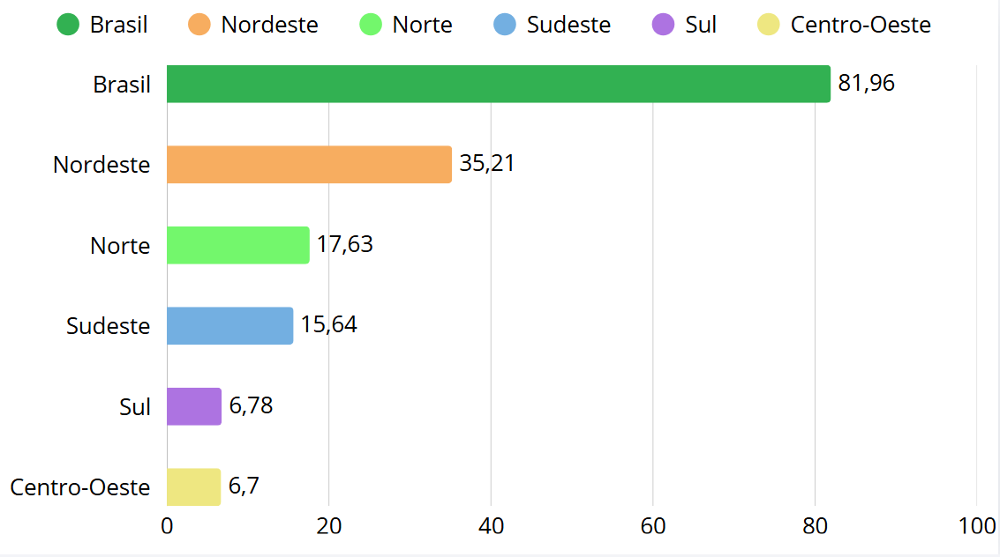
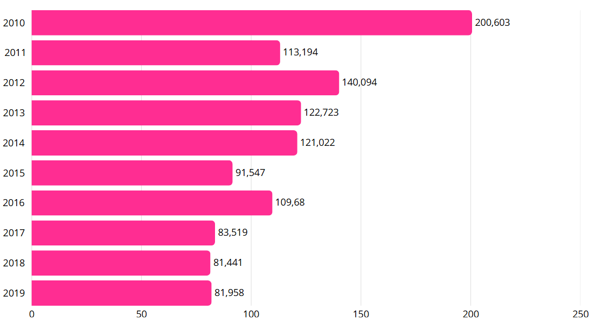

Precarização do Saneamento Básico e doenças relacionadas à água
Dados de 2019
O Brasil tem um severo problema em relação à distribuição de água potável para a sua população, com cerca de 34,2 milhões de brasileiros não tendo acesso a mesma, o que seria ~16,3% da população sem redes de distribuição de água. Além de que, mesmo o restante tendo água em suas residências, segundo os cálculos do IBGE 37,7% da população não usufrui do acesso considerado ideal, o que seria equivalente a 79,2 milhões de pessoas.
Há de ressaltar que também junto da distribuição de água existe a ausência de um tratamento/coleta de esgoto de qualidade. Só para parâmetros de compreensão cerca de 100 milhões de pessoas não possuem coleta de esgoto (~47,5% da população), e apenas 49% do esgoto do Brasil é tratado. Isso significa que além da falta de coleta do esgoto menos da metade dele é tratada, o que por si só gera uma grande preocupação sobre como todo esse material interage com o meio ambiente, e o aumento de vetores que se transmitem por meio dele.
Junto disso, ha precariedade do saneamento, principalmente vinda de regiões em que as fontes de água para a população são improvisadas, e possuem um padrão de qualidade questionável, além de poder ter contaminação vinda dos esgotos, demonstra que a uma ausência de processos fundamentais de purificação e controle de qualidade para o tratamento adequado da água nessas regiões. Além disso o esgoto ao contaminar corpos hídricos pode desencadear a eutrofização (que ocorre devido a composição rica em nitrogênio e fosfato no esgoto), que reduz o oxigênio dentro desses corpos assim levando a destruição de ambientes aquáticos.
A falta de saneamento básico e ausência de descarte correto fazem com que o esgoto em contato com o meio ambiente crie um ambiente que é favorável à proliferação de organismos parasitas, o que nesse cenário gera doenças de veiculação hídrica, como a amebíase, a cólera e gastroenterite infecciosa, que ocorrem pela contaminação fecal da água por protozoários, vírus e bactérias. Somente em decorrência dessas doenças foram registradas mais de 273 mil internações, o que gerou um gasto de R$ 108 milhões aos cofres públicos. Junto disso, a falta de saneamento gerou 2.734 óbitos em todo o país, o que em média seria cerca de 7,4 mortes por dia.
Dados sobre cada Região
Norte: sofre da infraestrutura mais precária. Com apenas 12% da população tendo coleta de esgoto, gerando a maior taxa de incidência de internações por habitante (22,9 casos para cada 10 mil pessoas);
Nordeste: concentrou o maior volume total de hospitalizações (113,7 mil) e registrou mais de mil óbitos. Apenas 28% dos moradores possuem coleta de esgoto;
Sul e Centro-Oeste: registraram cerca de 27,7 mil internações cada. O Sul tem 46,3% de coleta de esgoto e o Centro-Oeste alcança 57,7%;
Sudeste: possui os melhores indicadores gerais (79,2% de coleta de esgoto), mas ainda trata somente 55,5% do esgoto gerado e acumulou 61,7 mil internações (número influenciado por sua alta densidade populacional).
Gráfico 1 – Taxa de incidência de internações por doenças associadas à falta de saneamento (por 10 mil habitantes) em 2019

Gráfico 2 – Óbitos por doenças de veiculação hídrica (Número de óbitos) em 2019

Conclusão
Após todos esses dados apresentados se percebe-se que a importância de acelerar a agenda do saneamento básico, com mais investimentos de forma que a população receba os serviços. Com isso a população brasileira será beneficiada, e com o aumento na qualidade de vida, as pessoas serão mais saudáveis. O Brasil precisa trabalhar para cumprir as metas do ODS 6 — Água Potável e Saneamento, criado pela ONU, com o objetivo de globalizar o acesso à água e os serviços de esgotamento sanitário.
Fontes
Em 2019 quase 38% da população tinha alguma dificuldade de acesso a água Novo estudo do ITB demonstra como a falta de saneamento afeta diretamente na saúde da população
Créditos
Pesquisadores: Bianca Vitória Budziacki e Nicolas Kovalski de Carvalho;
Escritores do artigo: Icaro José Stabach Leite e Gustavo Henrique da Silva de Andrade;
Desenvolvedor da página: Rafael Padilha.